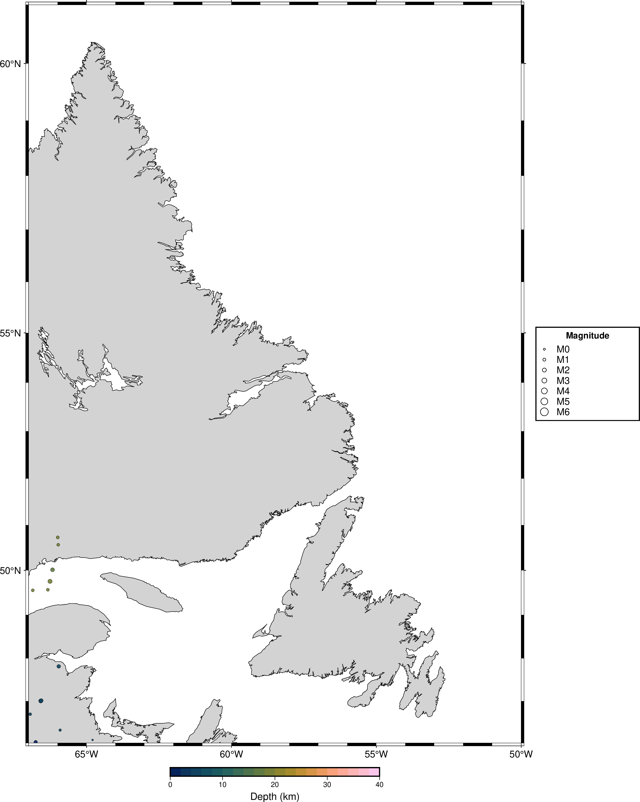

PiQuake Canada
Raspberry Pi Powered Access to the Earthquakes Canada Database
← Back to main dashboard
Newfoundland and Labrador recent earthquakes

Data sources
Earthquake data:
Earthquakes Canada (Natural Resources Canada)
Map generated using
GMT (Generic Mapping Tools)
Depth colours use the
Scientific Colour Maps by Fabio Crameri